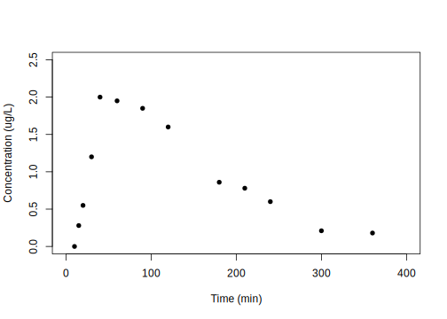
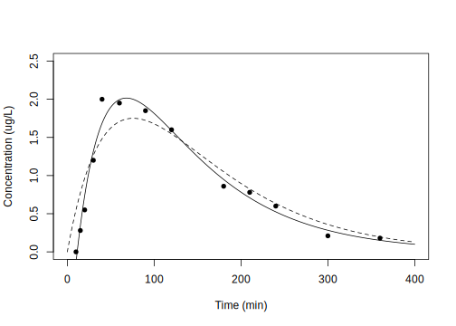
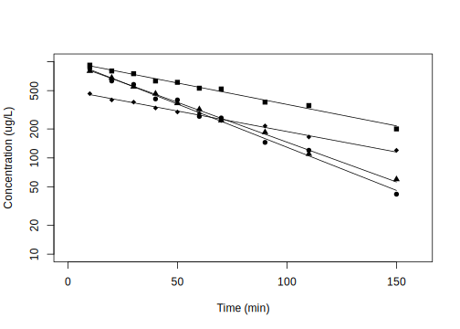
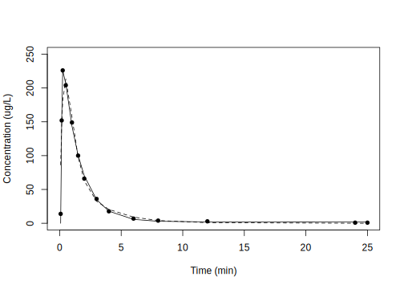

Chapter 5 구획분석의 자료해석
한성필
5.1 서론
약동학 구획분석을 한문장으로 표현하자면 시간 농도(time‐concentration data) 자료에 대한 약동학 파라메터 추정값(pharmacokinetic parameter estimates)을 구하는 과정이다. 다시 말하자면, 인체의 여러 장기(organ) 혹은 계(system)를 몇개의 구획으로 단순화하여 우리의 관심이 되는 특성을 파라메터화하여 각 구획들 간의 연관성을 파악하는 것이다. 약동학 파라메터의 추정을 위해서 약 30년 전부터 비선형 회귀분석(nonlinear regression analysis)이 사용 되어 왔고 현재 이 방식은 집단 약동학 분석에서 가장 필수적인 방법론으로 자리 잡은 상태이다. 추정에는 약동학 수식이 필요한데, 비선형 회귀분석 시 모형식(model formulation)으로 사용되며, 이 수식 안에 우리가 추정하고자 하는 약동학 파라메터가 모두 포함되어 있다.
구획간의 약물 이동은 1차 역학 (1st-order kinetics) 또는 선형 약동학(linear pharmacokinetics)을 따른다고 가정하게 된다. 선형 약동학이란 간단히 말해서 용량이 두배가 되면 농도도 두 배가 되는 것을 말하며, D (용량) → C (농도) 로 나타낼 경우 2D → 2C 의 관계가 성립하는 것을 말한다. 1구획 모델에서는 구획들 간의 약물 분포가 역학적으로 균일하다는 가정 하에 인체를 역학적 단일구획으로 기술한다. 1구획 모델에서는 약물이 작용부위로 신속히 이동한다고 가정하며 혈장을 자료 분석의 기준 구획으로 사용한다. 1구획 모델의 혈장농도 로그값은 시간에 대해 일직선적으로 감소하는 양상을 나타낸다. 2구획 모델에서는 구획들 간의 약물 분포가 역학적으로 균일하지 않다고 보며 인체를 중심 구획 (central compartment) 과 말초구획 (peripheral compartment)로 나누어 기술한다. 중심구획은 관류(perfusion)가 빠른 기관(예: 간, 신장)을 나타내는데 이는 약물의 분포와 관계하고 α phase 로 나타낸다. 반면 말초구획은 관류가 느린 기관(예: 근육, 지방)을 나타내며 이는 약물의 소실과 관계하고 β phase 로 나타낸다. 2구획 모델의 혈장농도 로그값은 시간에 대해 기울기가 두 개인 이직선적으로 감소하는 양상을 나타내는데, 처음의 빠른 기울기는 분포기를 나타내고, 나중의 느린 기울기는 소실기를 나타내게 된다.
그림 5.1: 3구획 약동학 모델에서 시간에 따른 농도 변화의 양상에 대한 모식도
정맥주사 후 3구획 모델을 비유를 들어 설명하자면, 구획을 나타내는 원통이 그림 5.1과 같이 세 개가 있다고 가정을 할 수 있다. 약물을 정맥주사(IV bolus, 정주)하면 정주 직후에 혈중 농도가 최대에 도달하였다가 시간이 지남에 따라 감소하게 되는데, 구획간의 분포 및 제거에 의해 약물의 농도가 감소를 하게 된다. 여기서 V1은 중심구획, V2는 rapid peripheral compartment이고, V3은 slow peripheral compartment이다. V1, V2, V3 원통의 부피는 약물이 분포하는 용적이고, 높이는 농도에 해당한다. 수평의 연결 파이프에 의해 약물이 분포 및 제거된다. 정주 후 초기에는 약물이 주로 V1에서 V2로 이동하면서 혈중농도가 급격하게 감소하고(rapid distribution phase), 그 이후에는 V1에서 V3로 약물이 이동하면서 동시에 V2에서는 거꾸로 V1으로 이동하며 전체적으로는 혈중농도가 감소(slow distribution phase)하게 된다. 그 후에는 V2, V3에서의 약물은 V1으로 이동해 나오면서 동시에 V1에서는 elimination이 일어나 농도가 아주 서서히 감소하게 된다. (terminal phase)
이렇게 약물의 이동에 대한 정량적인 표현을 위해서는 약동학 수식에 대해 익숙해 져야 할 필요가 있고, 수식을 잘 아는 것 만큼이나 자료를 해석하고 추정값을 실제로 구하는 작업을 충분히 경험할 필요가 있다.
5.2 상용 소프트웨어를 이용한 구획 분석 개론
그림 5.2: 다양한 상용 소프트웨어의 사용 예. A. GUI 기반 Phoenix NLME, B. GUI 기반 Lixoft Monolix, C. NONMEM의 제어구문
비선형 회귀분석(Nonlinear regression analysis)이 필요한 구획분석을 위해서는 컴퓨터 소프트웨어의 사용이 필수적이다. 이 때 Certara Phoenix NLME, Monolix와 같은 여러가지 소프트웨어들이 사용되고 있지만, 가장 널리쓰이는 도구는 ICON사의 NONMEM이라고 하는 소프트웨어이다. (그림 5.2) 이것은 FORTRAN 코드로 프로그램 되었으며 현재 버전 7.5.0까지 지속적으로 업데이트 되고 있는 소프트웨어로, 현재 구획분석 및 계량약리학 분야에서 가장 표준적인 도구로 생각되고 있다. 이에 대한 각종 자료를 이곳에서 다루기는 지면의 제약과 이론의 어려움 때문에 별도의 참고서적을 활용하는 것이 바람직할 것이다.
상용 소프트웨어를 통한 구획분석 방법은 GUI 기반이고 많은 사용자가 확보되어 있다는 장점이 있으나, 상당한 비용을 매년 지불하여야 하며, 접근이 다소 쉽지 않다는 단점을 가지고 있다.
5.3 구획분석에 활용할 수 있는 R package 소개
이를 극복하기 위해 통계 및 수학적 계산에 적합한 R 언어 기반의 오픈소스 소프트웨어가 활발히 개발되고 있다. 즉, 비구획분석을 위한 R 패키지를 3장에서 소개한 것과 마찬가지로 구획분석용 R 패키지에 대한 다양한 시도가 일어나고 있는 것이다. 본 서에서는 무료 R 패키지 “wnl”를 사용한 자료해석과 예제에 대해 다루고자 한다. (Bae 2020c)
NONMEM에서는 비선형 회귀분석을 위해서 최대 우도 추정법(maximum likelihood estimation)을 사용한다. 최대 우도 추정법에서 sample데이터에서 Y가 현재 측정된 값, E(Y)는 model에 의해 각각의 관측 지점에서의 예상되는 값, 그리고 V(Y)를 그 모델의 분산으로 표현한다. 이 때 모델에 주어진 관측값에 대한 우도(likelihood)는 다음과 같이 표현될 수 있다.
\[\begin{equation} L = \frac{1}{\sqrt{2\pi V(Y)}} \cdot e^{-\frac{1}{2V(Y)}\cdot(Y-E(Y))^2} \tag{5.1} \end{equation}\]
이때 이 일련의 관찰 값에 대한 우도는 개개인 관찰값의 확률을 통해 나오게 된다. 따라서 n개의 관찰값이 있으면 그 종합된 우도는 n개의 개개인별 확률이 되고 subject에 대한 우도는 다음과 같이 계산된다.
\[\begin{equation} L_i = \prod_{j=1}^{n_i}\frac{1}{\sqrt{2\pi V(Y_{ij})}} \cdot e^{-\frac{1}{2V(Y_{ij})}\cdot(Y_{ij}-E(Y_{ij}))^2} \tag{5.1} \end{equation}\]
이것은 -2 로그 우도로(-2 log likelihood) 전환 될 수 있으며, 이것은 다음과 같이 표현된다.
\[\begin{equation} -2log(L_i) = n_i \cdot log(2\pi) + \sum_{j=1}^{n}(log(V(Y_{ij}))+ \frac{(Y_{ij} - E(Y_{ij}))^2}{V(Y_{ij})}) \tag{5.2} \end{equation}\]
결국 NONMEM은 이 -2 로그 우도의 값을 최소화 하는 방식으로 표현된다. 이 때, 우측 수식에서 앞에있는 nilog(2π)는 상수이기 때문에 실제 I번째 대상에서의 objection function은 다음과 같이 나타난다.
\[\begin{equation} OBJ_i = n_i \cdot logV(Y_i) + \sum_{j=1}^{n} \frac{(Y_{ij} - E(Y_{ij}))^2}{V(Y_{ij})} \tag{5.3} \end{equation}\]
실제 여기에서 derivation 을 정규 분포에만 적용한 것이 최대 우도 측정법 (maximum likelihood estimation method)4이라면, 정규 분포라는 가정 없이도 적용한 것이 NONMEM 소프트 웨어 이며 이 방식을 ‘확장된 최소 제곱법’(extended least square method)이라고 한다.
이 책의 예제에서는 NONMEM® 의 확장된 최소 제곱법을 적용한 ‘nlr’ function을 사용하였다.
각 모델에 맞는 적합한 모델에 따라 다음과 같은 script 형태로 입력해 주게 되며, 그에 대한 표준 오차(standard error of estimates), 공분산 행렬(covariance matrix of estimates), run test results on residuals, AIC, AICc, SBC를 내부 계산을 통하여 도출하게 된다.
이때 run test란 residual들이 random하게 분포하는지를 보기 위해서 각각의 residual에서 최대 양수와 음수가 연속구간의 길이가 얼마나 되는지를 보는 방법이다. 이 때 계산된 p vaue를 통해서 실제로 residual이 random하게 분포하는지, 편향되게 분포하는지를 고려해 볼 수 있다.
AIC, AICc, SBC는 Akaike information criterion, Akaike information criterion corrected, Schwarz criterion을 의미하며 각각의 통계적 모델에서 구조가 적합한지를 확인할수 있도록 도와주는 지표이다.
5.4 1구획모델을 이용한 경구투여 후 약동학 자료 분석
아래의 코드로 wnl 라이브러리를 불러오고 hands-on1.csv5 파일을 읽어올 수 있다.
library(wnl)
dPK02 = read.csv("data/hands-on1.csv", skip=1)
colnames(dPK02) = c("TIME", "DV")
plot(dPK02[,"TIME"], dPK02[,"DV"], xlim=c(0, 400), ylim=c(0, 2.5),
xlab="Time (min)", ylab="Concentration (ug/L)", pch=16)
먼저 NCA 분석을 수행한다. Tmax는 40분, Cmax는 2.00 ug/L인 것을 알 수 있다.
NonCompart::sNCA(dPK02[,"TIME"], dPK02[,"DV"],
dose=100, doseUnit="ug", timeUnit="min")## b0 CMAX CMAXD TMAX TLAG
## 1.558e+00 2.000e+00 2.000e-02 4.000e+01 1.000e+01
## CLST CLSTP TLST LAMZHL LAMZ
## 1.800e-01 1.648e-01 3.600e+02 7.425e+01 9.335e-03
## LAMZLL LAMZUL LAMZNPT CORRXY R2
## 9.000e+01 3.600e+02 7.000e+00 -9.822e-01 9.647e-01
## R2ADJ AUCLST AUCALL AUCIFO AUCIFOD
## 9.577e-01 3.309e+02 3.309e+02 3.502e+02 3.502e+00
## AUCIFP AUCIFPD AUCPEO AUCPEP AUMCLST
## 3.485e+02 3.485e+00 5.507e+00 5.064e+00 4.231e+04
## AUMCIFO AUMCIFP AUMCPEO AUMCPEP VZFO
## 5.131e+04 5.055e+04 1.755e+01 1.631e+01 3.059e+01
## VZFP CLFO CLFP MRTEVLST MRTEVIFO
## 3.073e+01 2.856e-01 2.869e-01 1.279e+02 1.465e+02
## MRTEVIFP
## 1.450e+02
## attr(,"units")
## [1] "" "ug/L" "ug/L/ug"
## [4] "min" "min" "ug/L"
## [7] "ug/L" "min" "min"
## [10] "/min" "min" "min"
## [13] "" "" ""
## [16] "" "min*ug/L" "min*ug/L"
## [19] "min*ug/L" "min*ug/L/ug" "min*ug/L"
## [22] "min*ug/L/ug" "%" "%"
## [25] "min2*ug/L" "min2*ug/L" "min2*ug/L"
## [28] "%" "%" "L"
## [31] "L" "L/min" "L/min"
## [34] "min" "min" "min"
## attr(,"UsedPoints")
## [1] 7 8 9 10 11 12 13아래에서 경구 복용 후 1차 지수로 감소하는 약물에서의 약동학 모형을 사용한다. 이 경우에는 wnl 패키지 내부에 기본적 equation이 정의되어 있으므로 추가적인 equation을 입력하지 않고 각각의 파라미터의 값에 해당하는 THETA에 대해서만 입력하였다. 필요한 THETA는 k(제거 속도 상수), ka(흡수 속도 상수), V(부피), tlag(흡수가 지연되는 시간)이다.
5.4.1 Compartmental analysis without Tlag
아래는 경구 투여 일구획 분석, 지연시간이 없는 모형이다.
모델의 R script 입력 여기서 THETA[1], THETA[2], THETA[3]는 각각 파라미터 중 k(제거 속도 상수), ka(흡수 속도 상수), V(부피)를 의미한다.
각각의 nonlinear regression을 위해서 theta에 대한 initial value를 넣어준다. (nlr() 함수의 IE() 인자에 적용)
DOSE = 100
fPK02a = function(THETA) # Prediction function
{
Ka = THETA[1]
V = THETA[2]
K = THETA[3]
Cp = DOSE/V*Ka/(Ka - K)*(exp(-K*TIME) - exp(-Ka*TIME)) # eq 2:1
return(Cp)
}
TIME = dPK02[,"TIME"]
r1 = nlr(fPK02a, dPK02, pNames=c("ka", "V", "k"), IE=c(0.1, 30, 0.05))
r1$Est## ka V k AddErrVar AddErrSD
## PE 0.013202 21.018 0.013202 0.08701 0.29498
## SE 0.005442 8.623 0.005442 0.03413 0.05785
## RSE 41.220676 41.029 41.220716 39.22314 19.611575.4.2 Compartmental analysis with Tlag
경구 투여 일구획 분석, 지연시간이 있는 모형이다. ka, V, k에 Tlag가 추가되어 농도를 나타낼 수 있다.
fPK02b = function(THETA) # Prediction function
{
Ka = THETA[1]
V = THETA[2]
K = THETA[3]
tlag = THETA[4]
Cp = DOSE/V*Ka/(Ka - K)*(exp(-K*(TIME - tlag)) - exp(-Ka*(TIME - tlag))) # eq 2:2
return(Cp)
}
TIME = dPK02[,"TIME"]
r2 = nlr(fPK02b, dPK02, pNames=c("ka", "V", "k", "tlag"), IE=c(0.1, 30, 0.05, 20))
r2$Est## ka V k tlag AddErrVar
## PE 0.02747 27.354 0.010511 11.3754 0.015494
## SE 0.00606 4.149 0.001938 0.8676 0.006077
## RSE 22.06025 15.167 18.432707 7.6269 39.223384
## AddErrSD
## PE 0.12448
## SE 0.02441
## RSE 19.611695.4.3 Modeling Result
위 두개의 모델을 비교할 때 지연 시간이 있는 모형의 적합이 더 좋은 것을 알 수 있다. Cmax 부분을 주의깊게 살펴야 한다.
# Figure 2.3, p 480
plot(dPK02[,"TIME"], dPK02[,"DV"], xlim=c(0, 400), ylim=c(0, 2.5),
xlab="Time (min)", ylab="Concentration (ug/L)", pch=16)
TIME = 0:400
lines(TIME, fPK02a(r1$Est["PE", 1:3]), lty=2)
lines(TIME, fPK02b(r2$Est["PE", 1:4]))
5.5 1구획모델을 이용한 정맥주사 후 약동학 자료 분석
wnl 라이브러리를 불러오고 자료를 읽어온다.
이전 예제에서는 1명의 경구투약 후 농도 자료였고, 이번 예제는 4명의 IV 투약 후 농도 자료이다.
hands-on2.csv6를 읽어 들인 후 그림을 통해 자료의 탐색을 수행한다.
library(wnl)
dPK01 <- read.csv("data/hands-on2.csv", skip=1)
colnames(dPK01) <- c("TIME", "DV", "ID")
library(ggplot2)
ggplot(dPK01, aes(TIME, DV, group = ID, color = as.factor(ID))) +
geom_line() + geom_point() + scale_y_log10()- 4명의 피험자 모두 대략적으로 시간에 따른 농도 감소가 단항 지수함수적인 것을 관찰할 수 있다.
- 피험자 1과 2를 비교하면 2번 피험자가 AUC가 더 작으며, 따라서 청소율이 더 클 것이라
예상할 수 있으며, Y 절편이 거의 같은 것으로 보아 분포용적이 유사할 것으로 보인다.
- 피험자 3과 4의 경우 곡선이 교차하는 형태로 눈으로는 어느 쪽이 AUC가 클지 알기 어렵고, Y절편에 해당하는 농도가 높은 쪽이 분포용적이 더 작을 것이라 예상할 수 있다.
이러한 탐색을 수치적인 해석으로 확장하기 위해 4명 자료의 NCA 분석을 수행한다. 3장에서 다루었던 tblNCA() 함수를 사용해 계산할 수 있다.
NonCompart::tblNCA(dPK01, key="ID", colTime="TIME",
colConc="DV", dose=10, adm="Bolus")## ID b0 CMAX CMAXD TMAX TLAG CLST CLSTP TLST
## 1 1 6.919 920 92.0 10 NA 200 211.19 150
## 2 2 6.934 850 85.0 10 NA 42 45.18 150
## 3 3 6.878 800 80.0 10 NA 60 56.81 150
## 4 4 6.208 465 46.5 10 NA 120 117.19 150
## LAMZHL LAMZ LAMZLL LAMZUL LAMZNPT CORRXY R2
## 1 66.39 0.010441 10 150 10 -0.9943 0.9887
## 2 33.29 0.020824 10 150 10 -0.9951 0.9902
## 3 36.64 0.018919 10 150 10 -0.9984 0.9969
## 4 72.02 0.009625 10 150 10 -0.9972 0.9944
## R2ADJ AUCLST AUCALL AUCIFO AUCIFOD AUCIFP AUCIFPD
## 1 0.9873 77590 77590 96745 9675 97818 9782
## 2 0.9890 48374 48374 50391 5039 50544 5054
## 3 0.9965 48431 48431 51602 5160 51434 5143
## 4 0.9937 39678 39678 52146 5215 51854 5185
## AUCPEO AUCPEP AUMCLST AUMCIFO AUMCIFP AUMCPEO
## 1 19.800 20.679 4337000 9044967 9308475 52.05
## 2 4.003 4.292 1967000 2366394 2396605 16.88
## 3 6.146 5.838 2077250 2720574 2686362 23.65
## 4 23.910 23.482 2245250 5410815 5336766 58.50
## AUMCPEP C0 AUCPBEO AUCPBEP VZO VZP CLO
## 1 53.41 1058.0 10.223 10.111 9.90 9.791 0.1034
## 2 17.93 1146.8 19.813 19.753 9.53 9.501 0.1984
## 3 22.67 941.2 16.871 16.926 10.24 10.276 0.1938
## 4 57.93 540.6 9.642 9.696 19.92 20.037 0.1918
## CLP MRTIVLST MRTIVIFO MRTIVIFP VSSO VSSP
## 1 0.1022 55.90 93.49 95.16 9.664 9.728
## 2 0.1978 40.66 46.96 47.42 9.319 9.381
## 3 0.1944 42.89 52.72 52.23 10.217 10.155
## 4 0.1928 56.59 103.76 102.92 19.899 19.8485.6 Compartmental analysis
V, K만 있으면 단항 지수함수적 농도 감소를 보이는 IV dosing의 농도를 나타낼 수 있으므로 아래와 같이 간단한 함수를 만들 수 있다.
IDs = unique(dPK01[,"ID"])
nID = length(IDs)
DOSE = 10000 # ug
fPK01 = function(THETA) # Prediction function
{
V = THETA[1]
K = THETA[2]
Cp = DOSE/V*exp(-K*TIME) # External DOSE, TIME, eq 1:2
return(Cp)
}Subject군이 여러명일 경우 각각의 대상자의 값을 모두 구하기 위해서 for 함수를 사용하게 되는데, 다소 복잡해보이지만 nlr 함수를 여러번 사용하며 각 대상자의 약동학 파라메터 추정을 수행하는 것이 핵심이다.
Result = vector()
for (i in 1:nID) {
cID = IDs[i]
Data = dPK01[dPK01$ID == cID,]
TIME = dPK01[dPK01$ID == cID,"TIME"]
Res = nlr(fPK01, Data, pNames=c("V", "k"), IE=c(20, 0.2),
SecNames=c("CL", "AUC", "AUMC" , "Thalf", "MRT"),
SecForms=c(~V*k, ~DOSE/V/k, ~DOSE/V/k/k, ~log(2)/k, ~1/k))
Result = rbind(Result, cbind(ID=cID, Res$Est))
} ; Result## ID V k AddErrVar AddErrSD CL
## PE 1 9.9784 0.0102561 432.74 20.802 0.102340
## SE 1 0.1834 0.0003874 193.53 4.652 0.002597
## RSE 1 1.8382 3.7771994 44.72 22.361 2.537782
## PE 2 9.8162 0.0206613 753.97 27.459 0.202816
## SE 2 0.3308 0.0010188 337.19 6.140 0.005970
## RSE 2 3.3700 4.9308074 44.72 22.361 2.943762
## PE 3 10.2230 0.0190412 77.05 8.778 0.194658
## SE 3 0.1087 0.0003052 34.46 1.963 0.001891
## RSE 3 1.0630 1.6029349 44.72 22.361 0.971497
## PE 4 19.9472 0.0098140 72.19 8.497 0.195761
## SE 4 0.2954 0.0003071 32.29 1.900 0.004148
## RSE 4 1.4811 3.1291755 44.72 22.361 2.119026
## AUC AUMC Thalf MRT
## PE 9.771e+04 9.527e+06 67.5840 97.5031
## SE 2.480e+03 5.876e+05 2.5528 3.6829
## RSE 2.538e+00 6.167e+00 3.7772 3.7772
## PE 4.931e+04 2.386e+06 33.5481 48.3997
## SE 1.451e+03 1.763e+05 1.6542 2.3865
## RSE 2.944e+00 7.389e+00 4.9308 4.9308
## PE 5.137e+04 2.698e+06 36.4025 52.5177
## SE 4.991e+02 6.551e+04 0.5835 0.8418
## RSE 9.715e-01 2.428e+00 1.6029 1.6029
## PE 5.108e+04 5.205e+06 70.6287 101.8957
## SE 1.082e+03 2.673e+05 2.2101 3.1885
## RSE 2.119e+00 5.135e+00 3.1292 3.12925.6.1 Modeling Result
# Figure 1.1, p 470
plot(0, 1, type="n", xlim=c(0, 160), ylim=c(10, 1000), log="y", xlab="Time (min)", ylab="Concentration (ug/L)")
for (i in 1:nID) {
cID = IDs[i]
TIME = dPK01[dPK01$ID == cID,"TIME"]
points(TIME, dPK01[dPK01$ID == cID,"DV"], pch=14+i)
cTHETA = Result[Result[,"ID"]==cID & rownames(Result)=="PE", c("V", "k")]
lines(TIME, fPK01(cTHETA))
}
5.7 2구획모델 경구 흡수 이용한 약동학 자료 분석
wnl 라이브러리를 불러오고 자료를 읽어온다.
hands-on3.csv7를 읽어 들인 후 모델링을 수행한다.
library(wnl)
dPK14 <- read.csv("data/hands-on3.csv", skip=1)
colnames(dPK14) = c("TIME", "DV") ; dPK14## TIME DV
## 1 0.083 13.90
## 2 0.167 152.00
## 3 0.250 226.00
## 4 0.500 204.00
## 5 1.000 149.00
## 6 1.500 100.00
## 7 2.000 66.00
## 8 3.000 36.00
## 9 4.000 17.70
## 10 6.000 6.90
## 11 8.000 3.96
## 12 12.000 2.89
## 13 24.000 0.90
## 14 25.000 0.905.7.1 Compartmental analysis without Tlag
아래의 코드는 경구 투여 2구획 분석, 지연시간이 없는 모형이다. 2차 지수로 감소하는 약물에서의 약동학 모형이여,이때의 농도 값(Cp)을 구하기 위한 공식을 사용하였으며, Ka, Vc, k21, alpha, beta 로 농도를 나타낼 수 있다.
Dpo = 23158
## without lag
fPK14a = function(THETA)
{
Vc = THETA[1]
Ka = THETA[2]
k21 = THETA[3]
a = THETA[4] # alpha
b = THETA[5] # beta
T1 = e$DATA[,"TIME"]
Co = Ka*Dpo/Vc*((k21-a)/(Ka-a)/(b-a)*exp(-a*T1) +
(k21-b)/(Ka-b)/(a-b)*exp(-b*T1) +
(k21-Ka)/(a-Ka)/(b-Ka)*exp(-Ka*T1)) # Erratum in eq 14:1
return(Co)
}
r1 <- nlr(fPK14a, dPK14,
pNames=c("Vc/F", "Ka", "k21", "alpha", "beta"),
IE=c(350, 11, 1, 0.1, 0.01))
r1$Est## Vc/F Ka k21 alpha beta AddErrVar
## PE 43.59 2.347 0.6955 2.347 0.3960 537.13
## SE 40.96 2.240 0.9594 2.241 0.4919 202.99
## RSE 93.98 95.439 137.9449 95.482 124.2005 37.79
## AddErrSD
## PE 23.176
## SE 4.379
## RSE 18.8965.7.2 Compartmental analysis with Tlag
경구 투여 2구획 분석, 지연시간이 있는 모형이다. Ka, V, k21, alpha, beta 에 Tlag가 추가되어 농도를 나타낼 수 있다.
## with lag
fPK14b = function(THETA)
{
Vc = THETA[1]
Ka = THETA[2]
k21 = THETA[3]
a = THETA[4] # alpha
b = THETA[5] # beta
TL = THETA[6] # Tlag
T1 = e$DATA[,"TIME"]
Co = Ka*Dpo/Vc*((k21-a)/(Ka-a)/(b-a)*exp(-a*(T1-TL)) +
(k21-b)/(Ka-b)/(a-b)*exp(-b*(T1-TL)) +
(k21-Ka)/(a-Ka)/(b-Ka)*exp(-Ka*(T1-TL)))
Co[Co < 0] = 0 # remove negative concentrations before tlag
return(Co)
}
r2 <- nlr(fPK14b, dPK14,
pNames=c("Vc/F", "Ka", "k21", "alpha", "beta", "Tlag"),
IE=c(150, 11, 0.12, 0.1, 0.01, 0.05))
r2$Est## Vc/F Ka k21 alpha beta Tlag
## PE 88.528 19.767 7.902e-03 0.73176 1.976e-03 0.12163
## SE 2.315 3.763 1.243e-01 0.04575 1.129e-01 0.00812
## RSE 2.615 19.036 1.573e+03 6.25139 5.713e+03 6.67610
## AddErrVar AddErrSD
## PE 17.894 4.2301
## SE 6.851 0.8098
## RSE 38.288 19.14415.7.3 Modeling Result
지연 시간이 있는 모형의 적합이 더 좋은 것을 알 수 있다. 특히 Cmax 부분에서의 적합 차이를 주의해서 살펴 볼 필요가 있다.
plot(dPK14[,"TIME"], dPK14[,"DV"], xlim=c(0, 25), ylim=c(0, 250), xlab="Time (min)", ylab="Concentration (ug/L)", pch=16)
TIME = dPK14[,"TIME"]
lines(TIME, fPK14a(r1$Est["PE", 1:5]), lty=2)
lines(TIME, fPK14b(r2$Est["PE", 1:6]))
5.8 Theoph 약동학 자료의 구획분석
R에 내장된 Theoph 약동학 자료의 구획분석을 아래의 코드를 사용하여 수행한다. Minimization이 된 후 1구획 약동학 모형에서 언급된 파라미터 이외에 다른 파라미터에 대해서도 값을 구하기 위해서 다음과 같이 (CL(제거 속도), Thalf(반감기), MRT(평균 체류 시간)) 추가적으로 넣어준 후, 입력한 파라미터값들을 구하기 위한 수식을 뒤쪽 부분’SecForms’ 인자에 입력하게 된다. 이런 방법을 통하여 우리가 원하는 파라미터들의 점추정치와(point estimate), 그리고 표준 오차(standard error of estimates)를 모두 구할 수 있다.
library(wnl)
tData = Theoph
colnames(tData) = c("ID", "BWT", "DOSE", "TIME", "DV")
fPK = function(THETA) # Prediction function
{
DOSE = 320000 # in microgram
TIME = e$DATA[,"TIME"] # use data in e$DATA
K = THETA[1]
Ka = THETA[2]
V = THETA[3]
Cp = DOSE/V*Ka/(Ka - K)*(exp(-K*TIME) - exp(-Ka*TIME))
return(Cp)
}
IDs = unique(tData[,"ID"])
nID = length(IDs)
for (i in 1:nID) {
Data = tData[tData$ID == IDs[i],]
Res = nlr(fPK, Data, pNames=c("k", "ka", "V"), IE=c(0.1, 3, 500),
SecNames=c("CL", "Thalf", "MRT"),
SecForms=c(~V*k, ~log(2)/k, ~1/k))
print(paste("## ID =", i, "##"))
print(Res)
}5.9 결론
이상으로 구획모델링(compartment modeling)에 대한 간략한 이론과 실제 자료해석을 R 코드를 사용해서 알아보았다. 이는 단순하지만 여러 현상을 묘사할 수 있는 유용한 도구 중 하나이다. 즉, 간단한 수식으로 구성된 모델을 통해 현상을 분석하고 여러 변수를 연관시킨 후, 시뮬레이션을 통한 새로운 정보의 생성을 수행할 수 있다.
참고문헌
최대 우도 측정법 (maximum likelihood estimation method)은 점 추정치를 찾는데까지는 오래 걸리나, 표준 오차(standard error of estimates)를 구하는게 유리하다. 최근에는 최소 제곱법(Least square method) 보다 널리 쓰이고 있다.↩︎